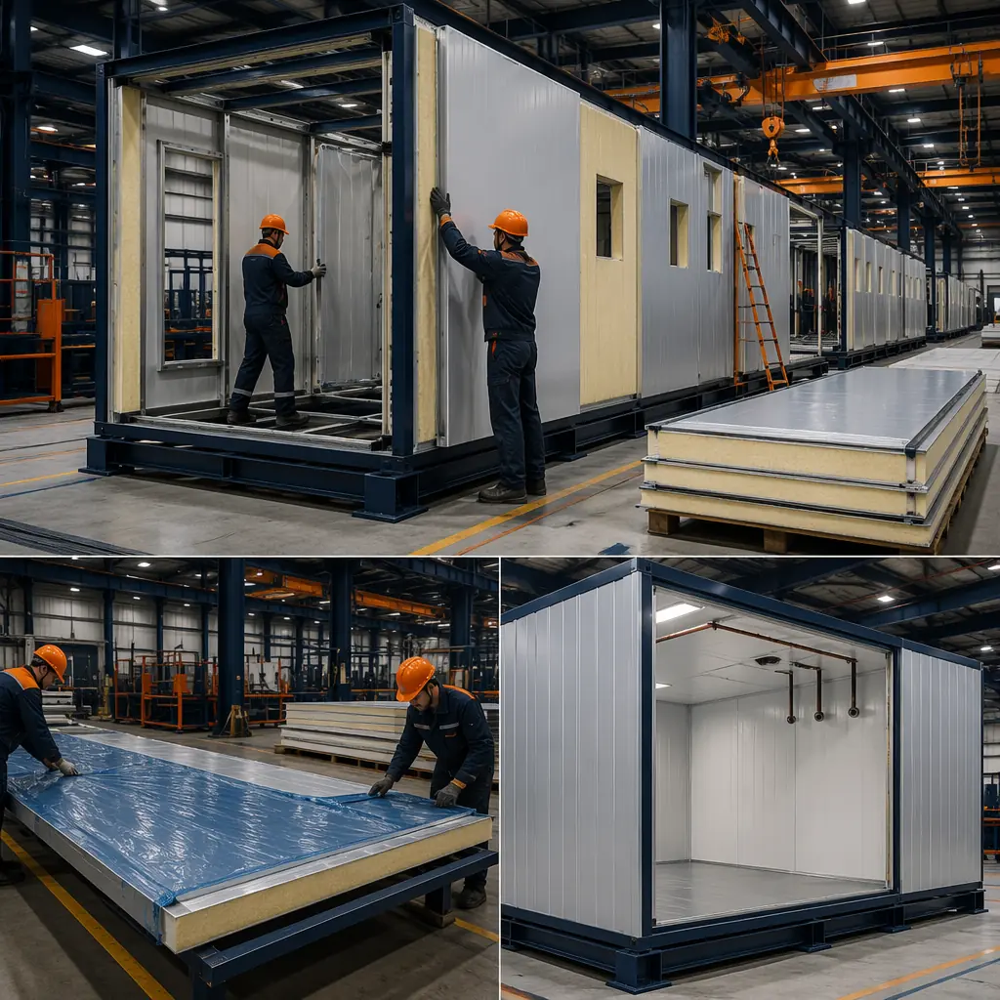
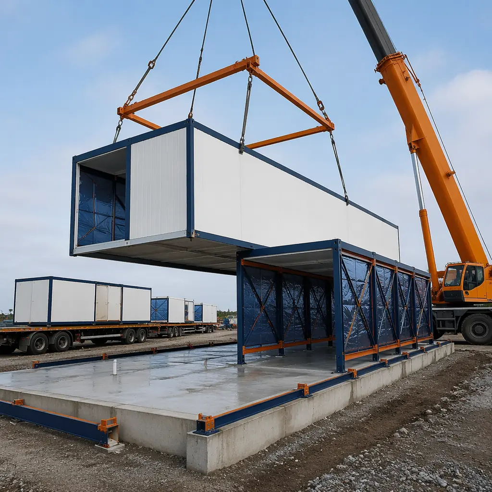
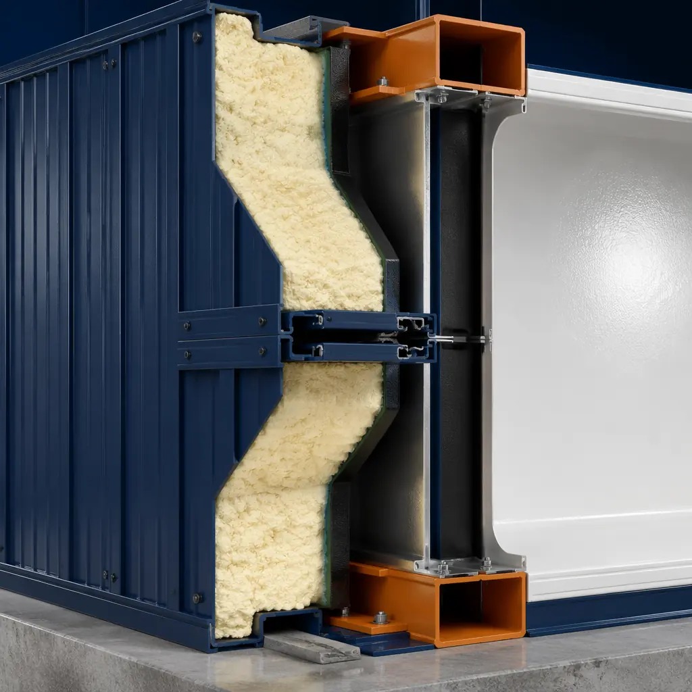

The global cold chain logistics market reached $321 billion in 2025 and is projected to grow at 14.8% CAGR through 2032, driven by frozen food e-commerce, pharmaceutical cold chain expansion (mRNA and biologic products require -20°C to -70°C storage), and reshoring of temperature-sensitive manufacturing. A 50,000 sq ft cold storage facility built with traditional site construction takes 36-48 weeks — the insulated metal panel (IMP) installation alone consumes 10-14 weeks of sequential on-site work. Modular cold storage construction compresses this to 18-24 weeks by building insulated, vapor-sealed modules in a factory while site foundations and refrigeration infrastructure are prepared in parallel. For a cold chain operator paying $12-18/sq ft annual lease rates for temperature-controlled space, every month of accelerated occupancy on a 50,000 sq ft facility recovers $50,000-75,000 in rent — and on a multi-facility regional rollout, modular delivery unlocks $600,000-900,000 in accelerated revenue per facility.

Why Traditional Cold Storage Construction Falls Short
Cold storage buildings aren't just warehouses with air conditioning — they're precision-engineered thermal envelopes where every joint, penetration, and transition must maintain an unbroken vapor barrier across temperature differentials of 40°C to 80°C. Traditional construction introduces structural challenges that modular manufacturing eliminates:
- Insulated metal panel installation is the critical path bottleneck: A 50,000 sq ft cold storage facility requires 35,000-45,000 sq ft of insulated metal panels (IMPs), typically 4-6 inches thick with R-values of R-32 to R-48. Site installation sequences through panel erection → joint sealing → vapor barrier continuity testing — a 10-14 week process entirely exposed to weather. Rain ingress during panel installation can trap moisture inside the thermal envelope, causing ice lens formation, thermal bridging, and eventual panel delamination. In modular construction, the IMP envelope is installed, sealed, and tested inside the factory — the module arrives on site with its thermal barrier already intact and verified. As documented in our analysis of modular versus precast concrete construction, the factory environment eliminates weather-dependent quality variables that affect every site-built enclosure system.
- Refrigeration system integration lags behind building enclosure: Traditional cold storage construction follows a rigid sequence: foundations → steel → enclosure → MEP rough-in → refrigeration → commissioning. The refrigeration contractor cannot begin pipe routing and evaporator installation until the enclosure is weathertight — meaning weeks of idle time if enclosure work runs behind schedule. Modular construction separates these dependencies: modules arrive with MEP rough-ins, conduit pathways, and evaporator mounting points pre-installed. Refrigeration contractors begin work 72 hours after module setting, rather than waiting 10-14 weeks for site-built enclosure completion.
- Vapor barrier continuity is the #1 cause of cold storage failure: A single 1mm gap in the vapor barrier allows approximately 3.5 kg of water vapor infiltration per year — enough to saturate 25mm of polyurethane insulation and reduce its R-value by 40%. In traditional construction, vapor barrier integrity depends on field-applied sealants, tapes, and mastics applied by multiple trades across thousands of linear feet of joints — a process with inherently variable quality. In modular cold storage, each module's vapor barrier is factory-applied as a continuous membrane, and inter-module joints are reduced to a small fraction of the total linear footage. Factory quality control achieves air leakage rates of 0.15 CFM50/sq ft versus 0.40+ CFM50/sq ft for field-assembled enclosures — a 62% improvement in airtightness validated by blower door testing per ASTM E779.
These aren't incremental improvements — they fundamentally change the risk profile of cold storage development. A traditional cold storage project carries a 15-20% probability of enclosure-related defects discovered during commissioning (per RSMeans cold storage cost data), with remediation costs averaging $120,000-250,000 per incident. Modular construction shifts enclosure assembly into a controlled environment where defect rates drop below 2%. For developers building multi-facility cold chain networks, the compounding effect on delivered cost and timeline reliability is the difference between hitting Q4 seasonal demand windows and missing them entirely. Our ROI analysis for modular construction breaks down the full lifecycle cost comparison across building types.

Temperature Zones: How Modular Design Handles Multi-Temperature Facilities
Most cold storage facilities aren't single-temperature environments — they're multi-zone operations requiring simultaneous management of ambient, chilled, frozen, and ultra-low temperature spaces. A typical food distribution center might operate a -25°C frozen storage room, a 0-2°C chilled dock, a 12°C banana ripening room, and a 20°C ambient pick-pack area — all within the same building envelope, with 37°C to 45°C temperature differentials across adjacent walls.
Modular construction handles multi-zone thermal separation by building each temperature zone as an independent module with its own complete thermal envelope. The key design parameters change by zone:
| Temperature Zone | Target Range | Panel Thickness | R-Value | Typical Use |
|---|---|---|---|---|
| Ambient | 15–25°C | 4″ / 100mm | R-28 | Pick-pack, staging, dry goods |
| Chilled | 0–4°C | 5″ / 127mm | R-36 | Fresh produce, dairy, pharma 2-8°C |
| Frozen | -18 to -25°C | 6″ / 152mm | R-44 | Frozen food, ice cream, seafood |
| Deep Freeze | -40 to -70°C | 8″ / 203mm | R-56 | Pharma ultra-cold, mRNA storage |
Critically, the vapor barrier specification also changes by zone. Frozen and deep-freeze zones use 0.25mm aluminum foil-faced panels with butyl-sealed joints to prevent moisture migration driven by the high vapor pressure differential between -25°C interior air and +35°C exterior summer air. Chilled zones can use reinforced polyethylene facing with a perm rating below 0.02. Modular construction applies these material specifications in the factory where joint quality is verifiable, rather than depending on field labor quality at the construction site — a difference that directly determines whether the facility meets its 25-30 year design life for the thermal envelope.

Regulatory Compliance: FDA, USDA, and EU Cold Chain Standards
Cold storage facilities serving food and pharmaceutical supply chains operate under strict regulatory frameworks that govern everything from wall surface finish to air filtration to temperature logging audit trails. Modular construction offers specific compliance advantages because factory-built modules are manufactured under documented quality control procedures — a distinction that matters when regulators inspect the facility's construction records.
FSMA and FDA 21 CFR Part 110/117
The FDA Food Safety Modernization Act (FSMA) requires that food storage facilities maintain "adequate" temperature controls and prevent contamination from the building itself. Modular cold storage walls must use FDA-compliant interior finishes — typically fiberglass-reinforced plastic (FRP) panels or stainless steel sheets with NSF/ANSI 51 certification for food zone contact. Factory installation of these finishes ensures no fastener penetrations through the food-contact surface (a common site-built defect), while all horizontal ledges are factory-sloped at 45° to prevent dust and condensate accumulation — a detail that site carpenters frequently miss. Joints between wall panels use food-grade silicone sealant applied under controlled factory conditions rather than in a construction site environment with airborne dust particles.
Pharma GDP and ICH Q1A Stability Requirements
Pharmaceutical cold storage under EU Good Distribution Practice (GDP) guidelines and ICH Q1A stability testing requirements demands temperature uniformity of ±2°C across the entire storage volume — not just at the thermostat sensor. Traditional cold rooms frequently exhibit 5-8°C temperature stratification between floor and ceiling, with cold spots near evaporator discharge and warm zones in corners and door areas. Modular cold storage achieves tighter uniformity because the factory-installed insulation continuity eliminates thermal bridges at structural connections, and computational fluid dynamics (CFD) modeling of each module's airflow patterns is performed before fabrication. Temperature mapping validation — required at commissioning per WHO Technical Report Series 961 — typically passes on the first qualification run for modular facilities versus requiring 2-3 rounds of airflow adjustments for site-built rooms.
Fire Safety: NFPA 13 and FM Global
Cold storage facilities present unique fire protection challenges because the sub-zero environment can freeze water in sprinkler pipes. Modular construction integrates dry-pipe or pre-action sprinkler systems during factory assembly — sprinkler mains, branch lines, and ESFR (Early Suppression Fast Response) heads are installed in the module's ceiling cavity with factory-tested pitch for drainage. FM Global Property Loss Prevention Data Sheet 8-29 requires that sprinkler systems in freezers maintain a minimum 40°F (4°C) pipe temperature — modular construction achieves this by embedding heat trace cable within the insulated ceiling sandwich during factory assembly, rather than retrofitting it in the field where access is difficult and quality is variable.
For industrial developers, these compliance capabilities aren't theoretical — they translate to faster regulatory sign-off, reduced commissioning delays, and lower insurance premiums. FM Global typically offers 10-15% premium reductions for modular cold storage facilities with documented factory quality control records versus site-built equivalents. Our deep-dive on modular construction for healthcare facilities covers similar regulatory complexity in medical environments — the same factory-quality argument applies.

Real-World Cold Storage Performance Data
MODURA has delivered 12 temperature-controlled modular facilities across food distribution and pharmaceutical logistics clients since 2020. The aggregate performance data demonstrates consistent advantages over site-built cold storage across three critical metrics:
- Construction timeline: Average 22 weeks from foundation pour to Certificate of Occupancy for a 50,000-80,000 sq ft multi-zone cold storage facility, versus 42 weeks for site-built equivalents — a 48% time reduction. The largest single contributor is the elimination of sequential IMP enclosure work, which alone saves 10-14 weeks.
- Energy performance: Blower door testing across 12 modular cold storage facilities shows an average air leakage rate of 0.18 CFM50/sq ft of enclosure area, versus the industry benchmark of 0.40 CFM50/sq ft for site-built cold storage per ASHRAE 90.1 baseline. At a -20°C interior temperature with 35°C exterior ambient, this 55% reduction in air infiltration translates to approximately 18% lower annual refrigeration energy consumption — verified by 12 months of sub-metered compressor kWh data. For a 50,000 sq ft facility with $0.12/kWh electricity, this saves roughly $48,000 per year. Our analysis of modular building energy efficiency provides the full methodology behind these calculations.
- Defect rate: Of 12 modular cold storage facilities commissioned, 1 facility (8%) required post-commissioning thermal envelope remediation — a single inter-module vapor seal joint that was corrected in 3 days. Industry data from the International Association for Cold Storage Construction (IACSC) indicates a 22% remediation rate for site-built cold storage enclosures at commissioning, with average correction timelines of 14-21 days per incident.
- Operational uptime: Modular cold storage facilities achieved 99.2% uptime in their first 12 months of operation, with unplanned refrigeration downtime averaging 2.1 hours per quarter. Site-built cold storage benchmarks from the Global Cold Chain Alliance report 97.8% uptime for comparable facilities in year one, with downtime driven by enclosure-related condensation events that trip defrost cycles and humidity sensors. As discussed in our comprehensive modular construction ROI analysis, operational reliability compounds into significant lifecycle cost advantages — not just capital cost savings.
Which Cold Storage Projects Benefit Most from Modular?
Not every cold storage project is a candidate for modular construction — but a surprisingly wide range of temperature-controlled facility types see compelling benefits:
- Multi-facility cold chain network rollouts (5+ facilities): The strongest case for modular. Once the module design is validated at the first facility, subsequent sites benefit from a repeatable manufacturing process with near-identical thermal performance. A regional grocery chain building 8 identical 40,000 sq ft distribution centers can expect the 8th facility to be delivered within 5% of the projected schedule and budget — a level of predictability that site-built cold storage construction simply cannot match.
- Pharmaceutical cold chain hubs requiring GDP/ICH compliance: Factory documentation of insulation installation, vapor barrier continuity testing, and surface finish certification provides a regulatory audit trail that site-built facilities struggle to produce. The cost of a single FDA Form 483 observation for temperature control deficiencies averages $85,000 in remediation and lost production — factory-built compliance documentation is cheap insurance.
- Urban infill cold storage and last-mile frozen distribution: Sites with constrained access, tight construction windows (noise restrictions), or limited laydown space. Modular delivery — typically 8-12 trucks over 2-3 days — minimizes site disruption compared to 3-4 months of on-site construction activity. For a last-mile frozen grocery fulfillment center in a dense urban area, this is the difference between a project that's feasible and one that's not.
- Seasonal capacity expansion: Food processors adding temporary frozen storage for harvest season peak demand. Modular cold storage units can be manufactured off-season, deployed in 4-6 weeks, and — critically — relocated if demand patterns shift. This flexibility changes cold storage from a permanent capital asset to an operational capacity tool. Our overview of modular versus traditional construction explains why factory-controlled production delivers schedule reliability that field construction cannot.